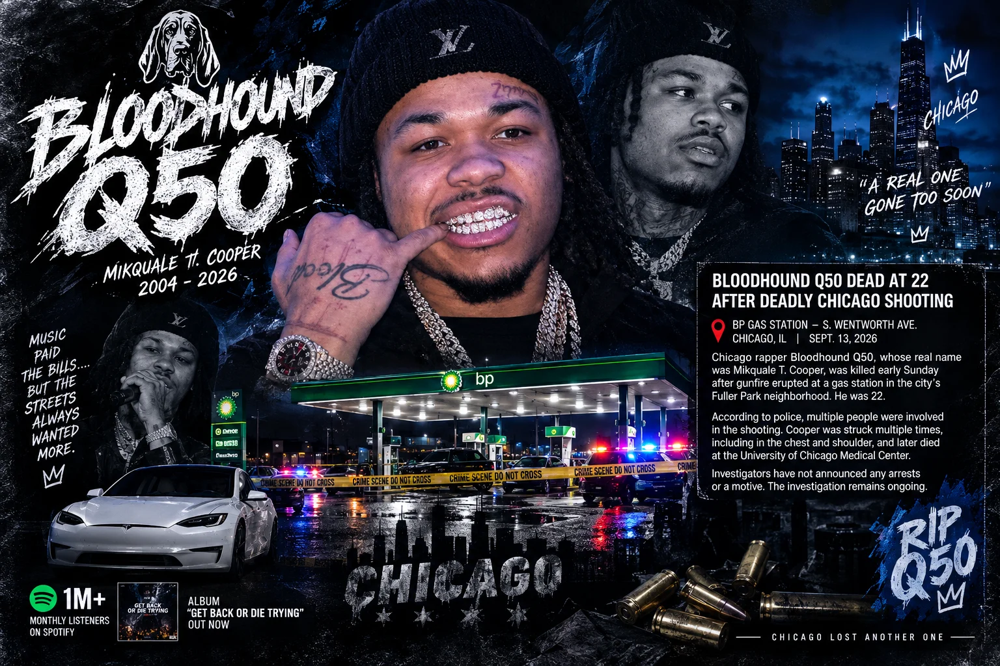
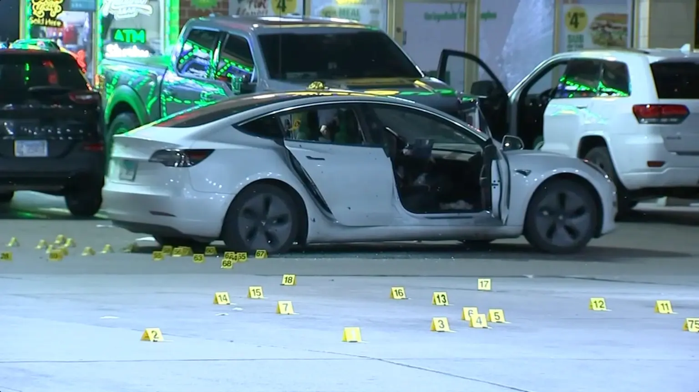
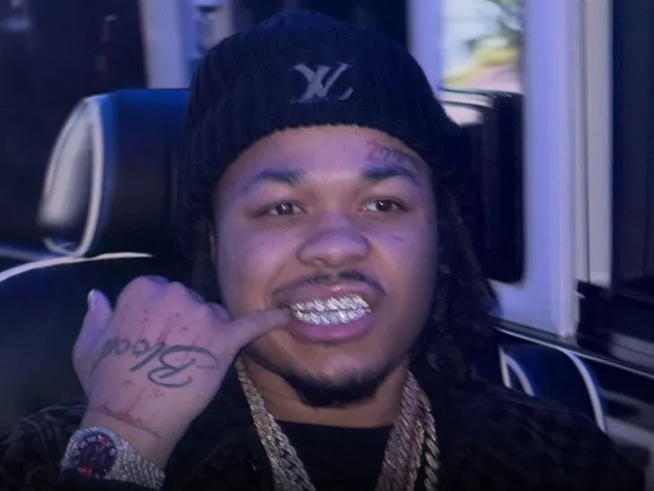

Bloodhound Q50 Dead at 22 After Deadly Chicago Shooting
Music | Crime
Published: Tuesday, September 15, 2026

Chicago rapper Bloodhound Q50, whose real name was Mikquale T. Cooper, was killed early Sunday after gunfire erupted at a gas station in the city’s Fuller Park neighborhood, according to police information reported by the Chicago Sun-Times.
Cooper was 22.
Authorities said the shooting happened around 4 a.m. at a BP station on South Wentworth Avenue. Investigators believe multiple people were involved, and police had not announced any arrests or a motive in the latest reports.
Watch: Instagram Video From the Scene
What Police Say Happened
According to the police report cited by the Sun-Times, Cooper arrived at the station in a white Tesla with a female passenger.
A black Infiniti and a Honda Accord were also reportedly at the location. After Cooper returned to his vehicle, several armed individuals allegedly opened fire.
Cooper was struck multiple times, including in the chest and shoulder.
He was taken to the University of Chicago Medical Center but later died from his injuries.
A nearby business was also damaged during the shooting.

One witness told the Sun-Times that the gunfire was so intense that he believed more than 100 rounds had been fired. Police evidence markings reportedly extended to approximately 80 locations, although the exact number of shots fired has not been established.
Q50 Had Talked About the Risks He Faced
Cooper had previously spoken publicly about the dangers surrounding his life and career.
During a recent conversation with DJ Akademiks, the rapper acknowledged that he understood the risks associated with his environment.
His previous comments have received additional attention following his death, particularly because he had openly discussed losing people close to him to gun violence.

Several Losses Had Already Hit His Circle
Cooper’s death comes after several other rappers connected to his circle were killed.
His cousin, Bloodhound Zmoney, died in a shooting in 2023.
In 2024, rappers Bloodhound Lil Jeff and Lil Scoom89 were also killed.
The repeated losses reportedly had a major impact on Cooper. In previous interviews, he discussed wanting to pursue music seriously and create a different future for himself and those close to him.
His Music Career Was Gaining Momentum
While Cooper’s life was marked by violence and legal trouble, his music career had also been developing.
The rapper had reportedly accumulated more than one million monthly Spotify listeners and released his album “Get Back or Die Trying” shortly before his death.
His growing streaming audience indicated that his music was reaching listeners well beyond Chicago.
Previous Weapons Case
Cooper also had a prior firearms case.
The Chicago Sun-Times reported that he was shot in the leg in 2023. While receiving medical treatment, officers reportedly discovered a firearm in his backpack.
Cooper later pleaded guilty to a weapons charge and was sentenced to one year in prison, with credit for time already served.
Police Investigation Remains Open
Investigators are still working to determine exactly what led to Sunday’s shooting.
Police have not publicly identified the people responsible, and no motive had been announced in the reports available Tuesday.
The killing has once again focused attention on the dangers that have affected numerous young artists connected to Chicago’s drill music culture.
For Bloodhound Q50, a career that appeared to be gaining momentum ended at just 22 years old.